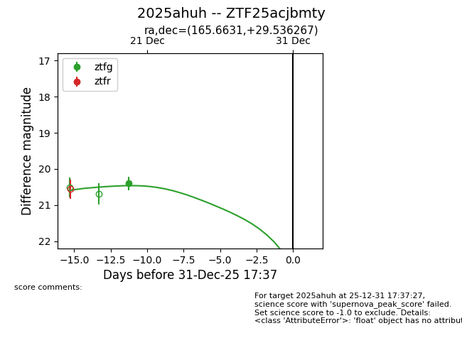
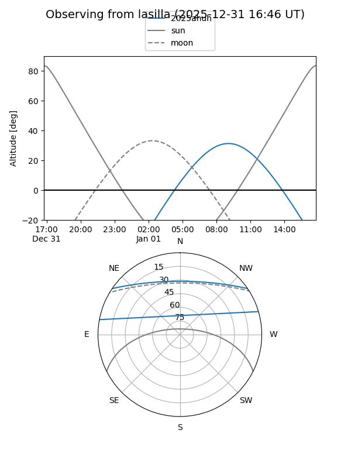
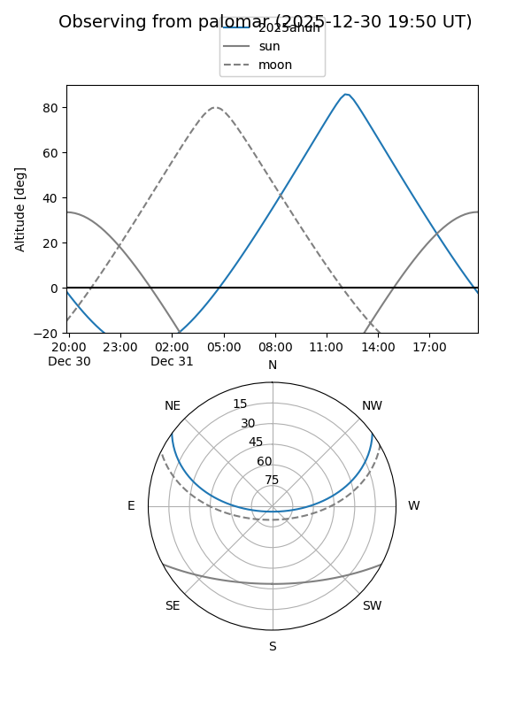
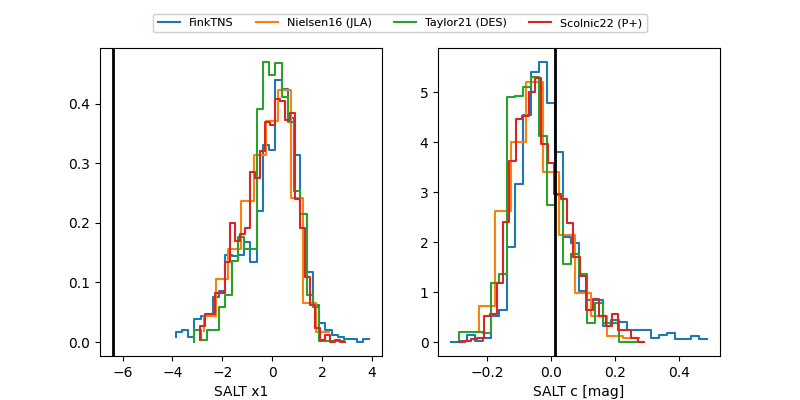

2025ahuh
Target 2025ahuh at 2025-12-21 02:03
Aliases and brokers:
FINK: fink-portal.org/ZTF25acjbmty
Lasair: lasair-ztf.lsst.ac.uk/objects/ZTF25acjbmty
ALeRCE: alerce.online/object/ZTF25acjbmty
TNS: wis-tns.org/object/2025ahuh
YSE: ziggy.ucolick.org/yse/transient_detail/2025ahuh
alt names
ZTF25acjbmty (ztf,fink_ztf)
2025ahuh (tns,yse)
Coordinates:
equatorial (ra, dec) = 165.6631,+29.53627
equatorial (HMS+DMS) = 11:02:39.14,+29:32:10.56
galactic (l, b) = (200.7455,+65.99516)
Flags:
Photometry:
last ztfg=20.40
1 ztfg detections
Lightcurve

Visibility


Additional plots
